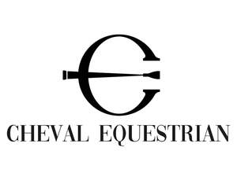

Trade Mark Journal No.2025/038 19 September 2025
UK00004250570 18 August 2025 (3,5,14,16,18,19,20,21,25,28,31,35,39,41,42,43,44,45)

- Class 3
- Pet shampoos; Pet odor removers; Non-medicated pet shampoos; Shampoos for pets; Pets (Shampoos for -); Pet stain removers; Cosmetics all for sale in kit form; Multifunctional makeup; Cleaning preparations for use in livestock farming; Boot polish; Shoe and boot cream; Boot cream; Boot wax; Shoe black [shoe polish]; Face masks; Face and body masks; Cleaning masks for the face; Body mask powder; Body mask cream; Body mask lotion; Body masks; Gel eye masks; Skin masks; Facial masks; Hair masks; Hydrating masks; Clay skin masks; Cosmetic mud masks; Skin moisturizer masks; Beauty masks for hands; Beauty masks; Masks (Beauty -); Facial beauty masks; Cleansing masks; Cosmetic masks; Foot masks for skin care; Cosmetic facial masks; Facial masks [cosmetic]; Hand masks for skin care; Hair care masks; Skin masks [cosmetics]; Mask pack for cosmetic purposes; Face scrub; Pores tightening mask packs used as cosmetics; Hairstyling masks; Face and body glitter; Face wash; Horse oil cream for skin care; Saddle soaps; Saddle soap; Hand cream; Eye make up remover; Nail cream; Stick pomade; Shower cream; Shaving cream; Hair grooming preparations; Animal grooming preparations; Shampoos for pets [non-medicated grooming preparations]; Shampoos for animals [non-medicated grooming preparations]; Hair removal and shaving preparations; Cosmetic hair care preparations; Hair cleaning preparations; Cosmetic hair dressing preparations; Body cleaning and beauty care preparations; Shaving preparations; Hair care lotions [for cosmetic use]; Beard care preparations; Hair care preparations; Hair styling preparations; Hair cosmetics; Hair care creams [for cosmetic use]; Hair styling lotions; Beauty preparations for the hair; Shaving lotions; Shaving sprays; Cosmetic preparations for the hair and scalp; Skin cleaning and freshening sprays; Shaving sets, comprised of shaving cream and aftershave; Hairdressing preparations; Facial care preparations; Scented ceramic stones; Body art stickers; Nail art stickers; Polish for furniture and flooring; Furniture polish; Furniture polishes; Furniture cleaner; Shoe polish; Shoe polishes; Shoe wax; Shoe cream; Shoe polish applicators containing shoe polish; Shoe sprays; Shoe polish and creams.
- Class 5
- Dietary pet supplements in the form of pet treats; Attractants for pet animals; Anti-flea collars for pets; Diapers for pets; Disposable pet diapers; Vitamins for pets; Pet odor neutralizer; Pet odour neutraliser; Repellents for dogs; Dogs (Repellents for -); Dog washes [insecticides]; Dog lotions for veterinary purposes; Animal flea collars; Cat repellents; Deodorants for clothing and textiles; Clothing (Deodorants for -) and textiles; Textiles (Deodorants for clothing and -); Deodorants for clothing; Nappy pants for incontinents; Fly glue; Glue (Fly -); Fly paper; Fly catching adhesive; Anti fly lotion; Fly catching paper; Fly catching adhesives; Adhesives (Fly catching -); Fly destroying preparations; Fly combating preparations; Vaccines for horses; Cement for animal hooves; Hooves (Cement for animal -); Vitamin supplements for animals; Dietary supplements for animals; Medicated supplements for animal feedstuffs; Mineral dietary supplements for animals; Vitamin supplements; Mineral supplements for feeding livestock; Vitamin and mineral supplements for pets; Protein supplements for animals; Herbal supplements; Colostrum supplements; Homeopathic supplements; Probiotic supplements; Calcium supplements; Food supplements; Nutritional supplements for livestock feed; Nutritional supplements; Food supplements for sportsmen; Vitamin and mineral supplements; Dietary supplements; Vitamin and mineral food supplements; Flaxseed dietary supplements; Mineral dietary supplements; Mineral nutritional supplements; Dietary supplements for pets; Linseed dietary supplements; Antibiotic food supplements for animals; Protein supplements; Nutritional supplements for veterinary use; Mineral dietary supplements for humans; Wheat dietary supplements; Prebiotic supplements; Medicated food supplements; Dietary supplements for humans; Liquid vitamin supplements; Dietary supplements consisting of vitamins; Food supplements for veterinary use; Medicated supplements for foodstuffs for animals; Zinc dietary supplements; Acai powder dietary supplements; Flaxseed oil dietary supplements; Dietary food supplements; Nutraceuticals for use as a dietary supplement; Casein dietary supplements; Chlorella dietary supplements; Anti-oxidant food supplements; Anti-oxidant supplements; Liquid dietary supplements; Feed supplements for veterinary use; Liquid herbal supplements; Liquid nutritional supplements; Vitamin preparations in the nature of food supplements; Protein dietary supplements; Lecithin dietary supplements; Protein powder dietary supplements; Dietary supplements in powder form; Albumin dietary supplements; Yeast dietary supplements; Linseed oil dietary supplements; Pollen dietary supplements; Propolis dietary supplements; Dietary and nutritional supplements; Health food supplements made principally of vitamins; Calcium tablets as a food supplement; Energy gels (dietary supplements); Fitness and endurance supplements; Health-aid foods supplements containing ginseng; Dietary supplements for pets in the nature of a powdered drink mix; Dietary supplements for infants; Vitamin supplement patches; Fodder supplements for veterinary purposes; Enzyme dietary supplements; Whey protein dietary supplements; Dietary supplements promoting fitness and endurance; Glucose dietary supplements; Soy protein dietary supplements; Alginate dietary supplements; Dietary supplements for medical use; Wheat germ dietary supplements; Health food supplements made principally of minerals; Food supplements for dietetic use; Vitamins for animals; Ground flaxseed fiber for use as a dietary supplement; Royal jelly dietary supplements; Dietary supplements with a cosmetic effect; Nutritional supplements consisting primarily of magnesium; Nutritional supplements consisting primarily of iron; Brewer's yeast dietary supplements; Medicinal tea; Asthmatic tea; Artificial tea [for medicinal use]; Herbal tea for medicinal use; Medicated hair care preparations; Pharmaceutical preparations for hair care; Veterinary vaccines; Antibiotics for veterinary use; Ferments for medical or veterinary use; Veterinary preparations; Shoe deodorizers.
- Class 14
- Pet jewelry; Jewelry for pets; Jewellery for pets; Watches for outdoor use; Costume jewellery; Costume jewelry; Body costume jewellery; Hat jewellery; Jewellery for personal wear; Dress watches; Hat jewelry; Scarf clips being jewelry; Choker necklaces; Jewelry (Paste -) [costume jewelry]; Paste jewelry [costume jewelry]; Dress ornaments in the nature of jewellery; Plastic costume jewellery; Paste jewellery [costume jewelry (Am.)]; Paste jewellery [costume jewelry [Am.]]; Fitted jewelry pouches; Jewelry organizer cases; Wristlets [jewellery]; Shoe jewelry; Fashion jewellery; Jewellery cases [fitted]; Jewelry cases; Shoe jewellery; Identification bracelets [jewelry]; Jewelry clips for adapting pierced earrings to clip-on earrings; Jewellery for personal adornment; Retractable key rings [trinkets or fobs]; Jewelry hat pins; Watches containing an electronic game function; Holiday ornaments [figurines] of precious metal, other than tree ornaments; Corporate recognition jewelry; Presentation boxes for jewelry; Musical jewelry boxes; Ear ornaments in the nature of jewellery; Ornaments [jewellery]; Boxes for cufflinks; Jewelry boxes; Watch hands; Clock and watch hands; Watch and clock hands; Hands (Clock -) [clock and watch making]; Clock hands [clock and watch making]; Leather watch straps; Works of art of precious metal; Metal works of art [precious metal]; 3D wall art made of precious metal; Jewelry; Necklaces [jewelry]; Pendants [jewelry]; Bracelets [jewelry]; Brooches [jewelry]; Jewelry brooches; Brooches being jewelry; Necklaces [jewellery, jewelry (Am.)]; Bracelets [jewellery, jewelry (Am.)]; Jewelry stickpins; Ornaments [jewellery, jewelry (Am.)]; Necklaces [jewellery]; Trinkets [jewelry]; Trinkets [jewellery, jewelry (Am.)]; Diamond jewelry; Amulets [jewelry]; Brooches [jewellery, jewelry (Am.)]; Pearls [jewelry]; Lockets [jewelry]; Amulets [jewellery, jewelry (Am.)]; Cloisonné jewellery [jewelry (Am.)]; Pearls [jewellery, jewelry (Am.)]; Charms [jewelry]; Jewelry charms; Charms for jewelry; Rings [jewelry]; Charms [jewellery, jewelry (Am.)]; Rings [jewellery, jewelry (Am.)]; Jewellery; Medallions [jewellery, jewelry (Am.)]; Clasps for jewelry; Lockets [jewellery, jewelry (Am.)]; Chains [jewellery, jewelry (Am.)]; Cloisonné jewelry; Bracelets [jewellery]; Jewelry hatpins; Pins [jewellery, jewelry (Am.)]; Ivory [jewellery, jewelry (Am.)]; Jewelry caskets; Pendants [jewellery]; Platinum jewelry; Crucifixes as jewelry; Jewelry chains; Chains [jewelry]; Ivory jewelry; Silver thread [jewellery, jewelry (Am.)]; Cameos [jewelry]; Pins being jewelry; Pins [jewelry]; Gold thread [jewellery, jewelry (Am.)]; Beads for making jewelry; Cabochons for making jewelry; Wire of precious metal [jewellery, jewelry (Am.)]; Rhinestones for making jewelry; Trinkets [jewellery]; Brooches [jewellery]; Jewellery brooches; Imitation jewelry; Threads of precious metal [jewellery, jewelry (Am.)]; Jewellery, including imitation jewellery and plastic jewellery; Items of jewellery; Jewellery items; Rings being jewellery; Rings [jewellery]; Jewellery chain of precious metal for necklaces; Amulets being jewellery; Amulets [jewellery]; Charms [jewellery]; Charms for jewellery; Jewellery charms; Identification bracelets of precious metal [jewelry]; Jewelry boxes of metal; Lockets [jewellery]; Pearls [jewellery]; Jewelry findings; Agate as jewellery; Cloisonne jewellery; Jade [jewellery]; Plastic bracelets in the nature of jewelry; Pewter jewellery; Leather jewelry boxes; Amber pendants being jewellery; Jewelry for the head; Decorative brooches [jewellery]; Gold jewellery; Jewellery caskets; Paste jewelry; Amberoid pendants being jewellery; Cloisonné jewellery; Jewellery chain of precious metal for bracelets; Jewelry boxes of precious metals; Clasps for jewellery; Jewelry caskets of precious metal; Bracelets made of embroidered textile [jewelry]; Silver thread [jewelry]; Jewelry boxes of precious metal; Jewellery stones; Jewellery in semi-precious metals; Women's jewelry; Gold thread jewelry; Gold thread [jewelry]; Children's jewelry; Wire of precious metal [jewelry]; Jewellery products; Beads for making jewellery; Crucifixes of precious metal, other than jewelry.
- Class 16
- Gift certificates; Gift vouchers; Gift cards; Gift wrap; Gift bags; Gift boxes; Gift packaging; Gift wrap cards; Christmas gift wrap; Gift paper; Gift books; Gift tags; Gift cartons; Gift wraps; Gift wrapping paper; Gift wrap paper; Paper gift wrap; Gift wrapping foil; Plastic gift wrap; Paper gift boxes; Paper gift bags; Metallic gift wrap; Paper gift tags; Paper wine gift bags; Paper bows for gift wrap; Paper gift wrap bows; Cardboard gift boxes; Paper gift wrapping ribbons; Metallic gift wrapping paper; Gift boxes made of cardboard; Gift cases for writing instruments; Birthday cards; Christmas cards; Invitation cards; Holiday cards; Anniversary cards; Gift-wrapping paper; Musical greeting cards; Occasion cards; Wrapping materials made of card; Announcement cards [stationery]; Giftwrapping paper; Greeting cards; Paper boxes for storing greeting cards; Birthday books; Musical greetings cards; Pop-up greetings cards; Stock certificate paper; Packaging boxes of card; Pencil ornaments [stationery]; Pencil ornaments (stationery); Printed award certificates; Vouchers of value; Treated paper for wrapping flowers and floral displays; Pre-paid purchase cards, not magnetically encoded; Greetings cards; Thank you cards; Paper loyalty cards; Cash receipt books; Motivational cards; Spirit gum for stationery purposes; Dinner mats of card; Hole punches for office use; Leather bookmarks; Imitation leather paper; Freezer bags; Sandwich bags; Plastic bags for packing; Paper bags; Bags of paper; Plastic shopping bags; Padded bags of paper; Shopping bags of paper or plastic; Padded bags of card; Paper shopping bags; Dustbin bags; Plastic sandwich bags; Carrier bags; Paper lunch bags; Sandwich bags [paper]; Garbage bags of plastic; Carrier bags of paper or plastic; Dustbin liner bags of plastic; Paper bags and sacks; Paper for bags and sacks; Plastic bags for wrapping; Food bag tape for freezer use; Paper bags for packaging; Packaging bags of paper; Plastic bags for packaging; Rubbish bags; Plastic disposable diaper bags; Handpainted paper wine bottle labels; Printed novelty wine labels; Paper pet crate mats; Art prints; Art etchings; Graphic art reproductions; Graphic art prints; Art paper; Art pictures; Lithographic works of art; Graphic art books; Fine art prints; Works of art of paper; Art mounts; Photographic or art mounts; Decoration and art materials and media; Printed art reproductions; Works of art made of paper; Colored craft and art sand; Adhesives for art use; 3D wall art made of paper; Arts, crafts and modelling equipment; Works of art and figurines of paper and cardboard, and architects' models; Paper for use in the graphic arts industry; 3D wall art made of card; Arts and crafts paint kits; Arts and craft paint kits; Papers for use in the graphic arts industry; Painting sets for artists; Book jackets; Jackets for papers; Jackets of paper for books.
- Class 18
- Horse bridles; Horse saddles; Horse halters; Horse rugs; Horse collars; Horse blankets; Bridles for horses; Horse cloths; Blinkers for horses [blinders for horses]; Harness for horses; Horse bits; Horse sheets; Blinders for horses; Blinkers for horses; Pads for horse saddles; Saddles (Pads for horse -); Saddle cloths for horses; Covers for horse saddles; Horse covers; Saddlecloths for horses; Horse tail wraps; Knee-pads for horses; Horse leg wraps; Blankets for horses; Headbands for horses; Equine boots; Horse fly sheets; Horse quarter sheets; Riding saddles; Cribbing straps for horses; Bits for horses; Ear bonnets for horses; Training leads for horses; Fly masks for horses; Articles of clothing for horses; Equine leg wraps; Spats and knee bandages for horses; Saddlery, whips and apparel for animals; Riding whips; Harness for animals; Bridles [harness]; Saddle blankets; Dog shoes; Riding crops; Saddlery; Animal apparel; Pet clothing; Raincoats for pet dogs; Pet leads; Electronic pet collars; Collars for pets; Clothing for pets; Pets (Clothing for -); Dog leashes; Pet hair bows; Animal leashes; Clothing for domestic pets; Dog clothing; Dog collars; Cat collars; Dog apparel; Dog coats; Dog parkas; Dog bellybands; Dog leads; Rawhide chews for dogs; Clothing for dogs; Coats for dogs; Dog waste bag dispensers adapted for use with leashes; Collars for cats; Leashes for animals; Cat o' nine tails; Coats for cats; Outdoor umbrellas; Patio umbrellas; Clothing for animals; Bags for sports clothing; Carriers for suits, shirts and dresses; Carriers for suits, for shirts and for dresses; Bags (Game -) [hunting accessories]; Game bags [hunting accessories]; Handbag straps; Wrist mounted carryall bags; Fashion handbags; Cattle skins; Skins (Cattle -); Saddle trees; Hunting crops; Boot bags; Laces (Leather -); Leather laces; Leather for shoes; Shoe bags; Souvenir bags; Leather credit card holder; Business card holders in the nature of wallets; Credit card holders made of leather; Business card holders in the nature of card cases; Credit card wallets; Credit card holders made of imitation leather; Leather credit card wallets; Fastenings for saddles; Stirrup leathers; Leathers (Stirrup -); Girths of leather; Saddle cloths; Cloths for saddles; Stirrup straps; Stirrups; Saddle belts; Fly masks for animals; Face masks for equines; Flight bags; Saddle pads; Saddle covers; Straps of leather [saddlery]; Saddlebags; Saddlery of leather; Halters; Rubber parts for stirrups; Stirrups (Parts of rubber for -); Parts of rubber for stirrups; Leather straps; Straps (Leather -); Leather for harnesses; Harness straps; Straps (Harness -); Bridles [harnessing]; Leather luggage straps; Shoulder belts [straps] of leather; Straps for handbags; Chin straps, of leather; All-purpose leather straps; Stirrups of metal; Straps (Leather shoulder -); Leather shoulder straps; Whips; Lashes [whips]; Lunge reins; Reins [harness]; Harness made from leather; Draw reins; Leather twist; Jockey sticks; Reins; Horseshoes; Metal horseshoes; Stud hole plugs for horseshoes; Non-metal horseshoes; Horseshoes made of plastic; Chain mesh purses; Imitation leather hat boxes; Leatherboard; Leathercloth; Saddletrees; Pouchettes; Leather; Leather and imitation leather; Leather and imitations of leather; Leather cloth; Tanned leather; Polyurethane leather; Leather handbags; Synthetic leather; Leather briefcases; Leather thongs; Leather purses; Boxes of leather or leather board; Leather for furniture; Leather bags; Leather wallets; Vegan leather; Studs of leather; Imitation leather; Leather (Imitation -); Leather pouches; Pouches of leather; Leather cord; Moleskin [imitation of leather]; Moleskin [imitation leather]; Leather cords; Leather leashes; Leashes (Leather -); Imitations of leather; Leather suitcases; Imitation leather bags; Unworked leather; Briefcases [leather goods]; Bands of leather; Handbags made of leather; Briefcases made of leather; Leather boxes; Boxes of leather; Leather cases; Leather thread; Thread (Leather -); Trimmings of leather for furniture; Furniture (Leather trimmings for -); Leather trimmings for furniture; Labels of leather; Leather shoulder belts; Belts (Leather shoulder -); Straps made of imitation leather; Key-cases of leather and skins; Valves of leather; Bags made of leather; Furniture coverings of leather; Coverings (Furniture -) of leather; Bags made of imitation leather; Leather bags and wallets; Cases of imitation leather; Harness; Notecases; Tote bags; Duffel bags; Duffle bags; Bags; Carry-all bags; Grocery tote bags; Drawstring bags; Cross-body bags; Crossbody bags; Carry-on bags; Sling bags; Diaper bags; Toiletry bags; Duffel bags for travel; Bucket bags; Shoulder bags; Belt bags and hip bags; Luggage bags; Nose bags [feed bags]; Bags (Nose -) [feed bags]; Clutch bags; Kit bags; Carrying bags; Nappy bags; Belt bags; Cloth bags; Messenger bags; Umbrella bags; Canvas bags; Garment bags; Leather shopping bags; Tool bags of leather, empty; Mesh shopping bags; Mesh bags for shopping; Canvas shopping bags; Waterproof bags; Toilet bags; Make-up bags; Makeup bags; Attaché bags; Suit bags; Bum bags; Reusable shopping bags; Hand bags; Bags [envelopes, pouches] of leather, for packaging; Bags [envelopes, pouches] for packaging of leather; Bags [envelopes, pouches] of leather for packaging; Bags for clothes; Baby carrying bags; Gym bags; Book bags; Overnight bags; Courier bags; Roll bags; Nose bags; Wheeled bags; Tool bags, empty; Shoe bags for travel; String bags for shopping; Travel bags; Bags for travel; Waist bags; Barrel bags; Cosmetic bags; Gladstone bags; Camping bags; Towelling bags; All-purpose carrying bags; Beach umbrellas [beach parasols]; Beach umbrellas; Beach parasols; Holdalls for sports clothing.
- Class 19
- Transportable stables, not of metal; Stables, not of metal; Modular non-metal stables; Stables (non-metallic -) [structures]; Stanchion stays (Non-metallic -); Framework for building, not of metal; Framework, not of metal, for building; Building (Framework for -), not of metal; Stalls [structures], not of metal for horses; Pipes (Rigid -), not of metal [building]; Rigid pipes, not of metal [building]; Rigid pipes, not of metal, for building; Non-metal fence stays; Temporary dams, not of metal; Earth retaining structures (Non-metallic -); Working platforms [scaffolding], not of metal; Foundation material (Non-metallic -) for use in building; Luminous paving blocks, not of metal; Aviaries, not of metal [structures]; Aviaries [structures], not of metal; Non-metallic rigid pipes for building; Banner support structures, not of metal; Woven textiles (Non-metallic -) for stabilising soft subsoils; Low tunnels [non-metallic or non-metallic frame] for the protection of plants; Modular homes, not of metal; Footing stone; Horse stall kick walls, not of metal; Shaped timber; Dome shaped skylight windows (Non-metallic -); Stone lanterns [garden ornaments of stone]; Bollards of artificial stone; Sun screens [outdoor], not of metal or textile; Thermal blinds (non-metallic -) [slatted outdoor]; Outdoor blinds, not of metal or of textile; Slatted shutters (non-metallic -) [outdoor]; Roller shades [outdoor] of plastic; Portable outdoor security cabins made of non-metallic materials; Horizontal slatted blinds [outdoor], not of metal or textile; Horizontal venetian blinds [outdoor], not of metal or textile; Outdoor blinds, not of metal and not of textile; Blinds [outdoor], not of metal and not of textile; Ceramic tiles; Glazed ceramic tiles; Glazed ceramic wall tiles; Ceramic wall tiles; Ceramic roofing tiles; Ceramic refractory workpieces; Ceramic bricks for use in refractory furnaces; Glazed ceramic floor tiles; Tiles of ceramic for walls; Glazed ceramic roof tiles; Ceramic shapes for use in refractory furnaces; Ceramic floor tiles; Ceramic tiles for floors; Tiles of ceramic for floors; Refractory ceramic masses; Ceramic tiles for flooring and lining; Tiles of porcelain; Ceramic tiles for internal walls; Ceramic tiles for external floors; Ceramic tiles for internal floors; Ceramic tiles for external walls; Ceramic drain pipes; Ceramic floor coverings; Ceramic tiles for flooring of building; Ceramic tiles for flooring and facing; Earthenware tiles; Earthenware and cement tubes; Ceramic refractory masses for lining metallurgical furnaces; Ceramic paving and surfacing; Ceramic tiles for covering floors; Plaster for use in pottery; Pottery stone; Stained glass windows (Glass for -); Glass panes; Glass for windows; Glass windows; Alabaster glass; Glass (Alabaster -); Window glass; Glass walls; Glass doors; Glass panels; Tiles of glass; Glass tiles; Stained glass windows; Glass bricks; Glass screens; Insulated glass; Glass roofs; Coloured glass for windows; Window glass, other than vehicle window glass; Window glass, except glass for vehicle windows; Tinted glass for use in building; Glass panels for windows; Tempered glass for use in building; Tempered glass for building; Glass for use in buildings; Layered glass; Building glass; Glass (Building -); Glass used in building; Glass for use in building; Glass for building; Toughened glass for building; Plate glass [windows], for building; Plate glass [windows] for building; Alabaster glass for building; Plate glass for building; Enamelled glass, for building; Safety glass; Glass elements for windows; Glass panels for doors; Window glass, for building; Window glass for building; Decorative glass [for building].
- Class 20
- Pet crates; Pet furniture; Pet houses; Pet cushions; Cushions (Pet -); Pet grooming tables; Kennels for household pets; Dog kennels; Inflatable pet beds; Barrels (Non-metallic -) for the identification of pet animals; Grooming tables for pets; Beds for pets; Dog houses [kennels]; Beds for household pets; Dog beds; Dog baskets; Non-metal dog tags; Dog tags, not of metal; Cat beds; Kennels; Cat trees; Cat baskets; Scratching posts for cats; Claws (Animal -); Animal claws; Cat flaps of non-metallic materials; Outdoor furniture; Indoor furniture; Sun screens [slatted outdoor]; Furniture for indoor aquaria; Indoor blinds; Furniture for indoor terraria; Furniture adapted for use outdoors; Indoor textile blinds; Stands [furniture] for indoor aquaria; Screens in the nature of blinds (indoor); Sun screens [slatted indoor]; Thermal blinds [indoor]; Indoor window shades [furniture]; Vertical blinds [indoor]; Slatted indoor blinds; Blinds (Slatted indoor -); Indoor window blinds [furniture]; Indoor blinds, and fittings for curtains and indoor blinds; Indoor window blinds [shade] furniture; Indoor window blinds [shade] [furniture]; Patio furniture; Sun screens [indoor], not of metal or textile; Louvre blinds [indoor]; Camping furniture; Furniture for camping; Indoor window shades of textile; Indoor window blinds of textile; Indoor blinds [roller]; Blackout blinds [indoor]; Indoor blinds (Venetian -); Venetian blinds [indoor]; Blinds (Indoor window -) [shades] furniture; Indoor window blinds [shades] [furniture]; Indoor window blinds; Window blinds [indoor]; Metal indoor window blinds; Slatted indoor blinds for windows; Indoor window shades of woven wood; Garden furniture; Picnic units [furniture]; Blackout blinds [slatted, indoor]; Metal furniture and furniture for camping; Indoor window blinds of woven wood; Blinds (Slatted indoor -) for protection against light; Plastic garden furniture; Polyvinyl chloride blinds [indoor]; Covers for clothing [wardrobe]; Stand (Costume -); Toy chests; Toy boxes [furniture]; Wall-mounted tool racks; Jewelry organizer displays; Wall-mounted non-metal tool racks; Shelving for sale in kit form; Jewellery organizer displays; Animal hooves; Hooves (Animal -); Boot trays [furniture]; Hampers [baskets]; Holiday ornaments of wood, not tree ornaments; Hampers [baskets] for the transport of items; Shop furniture for use in displaying cards; Saw horses; Straw plaits; Plaits (Straw -); Saddle racks; Saddle stands; Wooden sticks for holding candy or ice cream; Bath grab bars, not made of metal; Split cane flower sticks; Shower grab bars, not of metal; Bean bag pillows; Support pillows for use in baby seating; Bedding for cots [other than bed linen]; Nap mats [cushions or mattresses]; Support pillows for use in baby car safety seats; Throw pillows; Baby head support cushions; Mattress (Straw -); Straw mattress; Bumper guards for cots, other than bed linen; Sleeping mats of bamboo or straw; Bedding for nursery cots [other than bed linen]; Stuffed pillows; Pillows; Children's beds made of cloth in the form of a bag; Leather furniture; Sleeping bag pads; Bean bag cushions; Bean bag chairs; Bean bags; Bean bag beds; Tea trolleys; Tea tables; Tea carts; Wine racks; Casks of wood for decanting wine; Wine (Casks of wood for decanting -); Wine casks (Non-metallic -); Wine racks [furniture]; Corks for bottles; Bottles (Corks for -); Ceramic knobs; Ceramic pulls for furniture; Molds of plaster for casting ceramic materials; Ceramic pulls for cabinets; Porcelain knobs; Commemorative statuary cups of wood, wax, plaster or plastic; Glass doorknobs; Glass cabinets; Mirrors (silvered glass); Glass (Silvered -) [mirrors]; Silvered glass [mirrors]; Glass furniture; Glass knobs; Transparent doors of glass for furniture; Works of art of cork; Works of art of plastic; Works of art of bamboo; Works of art of hay; Glass for use in framing art; Works of art of straw; Works of art of nutshell; Works of art made of wax; Works of art made of wood; Works of art made of plaster; Works of art made of amber; Works of art made of amberoid; 3D wall art made of wood; Works of art of wood, wax, plaster or plastic; Art (Works of -) of wood, wax, plaster or plastic; Beach beds; Plastic suction cups; Non-metal cup hooks; Empty coffee capsules of plastic; Screw cups, not of metal; Prize cups of wood, wax, plaster or plastic; Furniture; Furniture and furnishings; Upholstered furniture; Dressers [furniture]; Cushions [furniture]; Wooden furniture; Credenzas [furniture]; Furniture cabinets; Cabinets [furniture]; Recliners [furniture]; Washstands [furniture]; Bentwood furniture; Pouffes [furniture]; Kitchen furniture; Bedroom furniture; Cupboards being furniture; Nursery furniture; Drawers for furniture; Benches [furniture]; Household furniture; Bathroom furniture; Lawn furniture; Desks [furniture]; Furniture shelves; Shelves [furniture]; Panelling for furniture; Furniture for kitchens; Kitchen dressers [furniture]; Wooden shelving [furniture]; Slatted furniture; Stationery cabinets [furniture]; Chairs being office furniture; Shop furniture; Tables [furniture]; Seating furniture; Furniture moldings; Office furniture; Furniture (Office -); Furniture for bathrooms; Consignment shelving [furniture]; Bamboo furniture; Furniture for storage; Storage furniture; Lounge furniture; Furniture of metal; Metal furniture; Furniture racks; Racks [furniture]; Furniture parts; Trolleys [furniture]; Furniture partitions; Furniture frames; Arbours [furniture]; Furniture chests; Lockers [furniture]; Pedestals [furniture]; Partitions of wood for furniture; Furniture partitions of wood; Furniture (Partitions of wood for -); Furniture for vivariums; Consoles [furniture]; Furniture for offices; Antique style furniture; Furniture for shops; Doors for furniture; Furniture doors; Transformable furniture; Mirrors [furniture]; Furniture for washrooms; Stackable furniture; Furniture for conservatories; Trestles [furniture]; Metal cabinets [furniture]; Wooden racks [furniture]; Inflatable furniture; Furniture (Inflatable -); Seats [furniture]; Garden furniture manufactured from wood; Fireguards [furniture]; Furniture for caravans; Metal shelving [furniture]; Furniture for children; Joints for furniture; Modular bathroom furniture; Shelves being nursery furniture; Computer furniture; Furniture for saunas; Legs for furniture; Drawers [furniture parts]; Drawers as furniture parts; Screens [furniture]; Furniture screens; Cane furniture; Domestic furniture; Furniture for babies; Countertops [furniture parts]; Metal office furniture; Shoe racks; Shoe cabinets; Shoe organisers; Shoe pegs, not of metal.
- Class 21
- Horse combs; Horse brushes; Clothes horses; Horse brushes of wire; Mangers for horses; Mane brushes [horse combs]; Brushes for grooming horses; Clothes airers [clothes horse]; Animal activated livestock waterers; Mangers for animals [troughs for livestock]; Brushes for grooming pet animals; Litter scoops for use with pet animals; Pet grooming glove; Litter trays for pet animals; Pet paw cleaners, non-electric; Food containers for pet animals; Animal-activated pet feeders; Pet lick mats; Pet feeding dishes; Pet feeding bowls; Electronic pet feeders; Cages for pets; Pet treat jars; Cages for household pets; Pets (Cages for household -); Pet drinking bowls; Electric pet brushes; Automatic pet feeders; Deshedding brushes for pets; Pet feeding and drinking bowls; Deshedding combs for pets; De-shedding combs for pets; Pet feeding bowls, automatic; Brushes for pets; Household containers for storing pet food; Trays (Litter -) for pets; Litter trays for pets; Raccoon dog hair for brushes; Dog food scoops; Cat litter boxes; Cat litter pans; Filters for use in cat litter pans; Litter boxes for pets; Automatic litter boxes for pets; Indoor aquariums; Indoor terrariums; Portable cooking kits for outdoor use; Indoor aquaria; Aquaria (Indoor -); Stands for indoor aquaria [other than furniture]; Indoor terrariums for animals; Indoor terraria; Indoor insect vivaria; Indoor insect habitats; Indoor terrariums for plants; Indoor insect vivariums; Indoor terrariums for insects; Indoor ant habitats; Terrariums (Indoor -) [vivariums]; Indoor terrariums [vivariums]; Terrariums (Indoor -) [plant cultivation]; Indoor terrariums [plant cultivation]; Tanks [indoor aquaria]; Camping grills; Articles for the care of clothing and footwear; Caddies for holding hair accessories for household and domestic use; Mangers for cows; Cattle troughs; Feeding troughs for cattle; Watering troughs for cattle; Feeding troughs for livestock; Mangers for sheep; Drinking troughs for livestock; Feeding troughs of metal for cattle; Animal activated livestock feeders; Popcorn tins, empty, for household use; Empty popcorn tins for household use; Boot jacks; Jacks (Boot -); Boot stretchers; Boot removers; Boot brushes; Boot trees; Boot stretchers of wood; Boot trees [stretchers]; Shoe horns; Bouquet holders; Trouser stretchers; Fly swatters; Fly traps; Fly catchers [traps or whisks]; Mane brushes; Implements (Hand operated -) for cracking lobsters; Broom handles; Siphons for cream; Wooden chopping boards for kitchen use; Non-electric egg crackers for household use; Beaters (Non-electric -) for kitchen use; Chopping boards for kitchen use; Skin care cream dispensers; Polishing leather; Leather (Polishing -); Leather coasters; Chamois leather for cleaning; Tea bag rests; Piping bags ; Pastry bags; Isothermic bags; Bota bags; Wine decanters; Wine glasses; Wine pourers; Wine jugs; Coolers for wine; Wine coolers; Wine chillers; Wine aerators; Wine bottle cradles; Wine openers; Wine buckets; Wine tasters [siphons]; Wine strainers; Tubes [pipettes] for wine tasting; Non-electric coolers for wine; Cooling buckets for wine; Ladles for serving wine; Vacuum pumps for wine bottles; Wine drip collars; Wine drip collars specially adapted for use around the top of wine bottles to stop drips; Whisky glasses; Beer glasses; Wine coasters of precious metal; Bottle pourers; Glass decanters; Glass bottles; Drinking bottles; Wine-tasting pipettes; Glass stoppers for bottles; Ceramic tableware; Ceramic hollowware; Ceramic mugs; Ceramic figurines; Figurines of porcelain, ceramic, earthenware, terra-cotta or glass; Statuettes of porcelain, ceramic, earthenware or glass; Statues of porcelain, ceramic, earthenware or glass; Statues of porcelain, earthenware, ceramic or glass; Statuettes of porcelain, ceramic, earthenware, terra-cotta or glass; Figurines of porcelain, ceramic, earthenware, terra-cotta or glass for cakes; Works of art of porcelain, ceramic, earthenware, terra-cotta or glass; Busts of porcelain, ceramic, earthenware or glass; Statues of porcelain, ceramic, earthenware, terra-cotta or glass; Busts of porcelain, ceramic, earthenware, terra-cotta or glass; Prize cups of porcelain, ceramic, earthenware, terra-cotta or glass; Works of art of porcelain, ceramic, earthenware or glass; Ceramic ornaments; Figurines [statuettes] of porcelain, ceramic, earthenware or glass; Commemorative statuary cups of porcelain, ceramic, earthenware, terra-cotta or glass; Figurines made of ceramic; Mugs made of ceramic materials; Porcelain; Decorative porcelain ware; Works of art, of porcelain, terra-cotta or glass; Porcelain mugs; Mugs of porcelain; Coffee services of ceramic; Tableware of porcelain; 3D wall art of made of ceramic; Porcelain ware; Sculptures of porcelain; Figurines of porcelain; Ceramic coin boxes; Earthenware; Sculptures of earthenware; Earthenware mugs; Figurines of earthenware; Dinnerware of porcelain; Plaques of porcelain; Statuettes of porcelain; Ornamental figurines made of porcelain; Enamelled glass; Mugs made of porcelain; Porcelain flower pots; Statues, figurines, plaques and works of art, made of materials such as porcelain, terra-cotta or glass, included in the class; Porcelain coasters; Signboards of porcelain or glass; Ornamental sculptures made of porcelain; Planters of porcelain; Pottery; Crockery made of porcelain; Opaline glass; Glass carafes; Glass vases; Opal glass; Glass (Opal -); Glass jars; Glass plates; Glass flasks; Glass mugs; Glass tableware; Glass containers; Glass cups; Candlesticks of glass; Glass candlesticks; Glass bowls; Bowls (Glass -); Glass stoppers; Stoppers (Glass -); Sculptures of glass; Sheet glass (except glass used in building); Glass ornaments; Glass flowerpots; Glass floor vases; Decorative stained glass; Ornamental glass; Glass pots; Porous glass; Figurines of glass; Glass caps; Statuettes of glass; Unworked glass [except glass used in building]; Unworked glass, except building glass; Glass dishes; Stained glass figurines; Glass powder; Glass sheets; Glass rods; Boxes of glass; Statues of glass; Glass pans; Busts of glass; Plaques of glass; Pressed glass; Artworks of glass; Polished plate glass; Semi-worked glass [except glass used in building]; Semi-worked glass, except building glass; Semi-worked glass; Glass (Semi-worked -); Planters of glass; Glass [receptacles]; Stamped glass; Spun glass; Glass holders; Semi-worked glass beads; Unworked glass; Decorative glass spheres; Unwrought glass; Glass flasks [containers]; Plate glass being unworked; Glass signboards; Jars (Glass -) [carboys]; Glass jars [carboys]; Glass for vehicle windows; Drinking glass holders; Plate glass for cars; Jardinieres of glass; Art objects of glass; Works of art made of porcelain; Works of art made of glass; Works of art made of earthenware; Works of art made of crystal; 3D wall art of made of porcelain; 3D wall art of made of earthenware; 3D wall art made of terra-cotta; 3D wall art of made of glass; Shirt stretchers; Mug sleeves; Cup holders; Cups; Cup lids; Coffee cups; Tea cups; Sippy cups; Liqueur cups; Cups and mugs; Drinking cups; Egg cups; Cups (Egg -); Plastic cups; Sake cups; Fruit cups; Cups (Fruit -); Compostable cups; Paper cups; Cardboard cups; Mixing cups; Insulating sleeve holder for beverage cups; Feeding cups; Biodegradable cups; Cupcake baking cups; Silicone baking cups; Paper baking cups; Baking cups of paper; Cups of paper or plastic; Coffee mugs; Cups made of china; Cups made of earthenware; Demitasse sets comprised of cups and saucers; Egg cups of precious metal; Double wall cups; Coffee scoops; Cups of precious metal; Cups made of pottery; Drinking cups [not of precious metal]; Egg cups, not of precious metal; Coffee pots; Training cups for babies; Biodegradable paper pulp-based cups; Non-electric coffee drippers for brewing coffee; Tea strainers; Cups, not of precious metal; Foam drink holders; Sake cups [not of precious metal]; Training cups for infants; Tea balls; Pint glasses; Cups made of plastics; Tea pots; Tea infusers; Suction bowls; Coffee stirrers; Feeding cups for children; Jewelry dishes; Shoe cloths; Shoe stretchers; Shoe brushes; Shoe trees; Shoe shine cloths; Shoe polishing mitts; Shoe polishers (Non-electric -); Shoe trees [stretchers].
- Class 25
- Clothing for horse-riding [other than riding hats]; Riding shoes; Riding boots; Donkey jackets; Horse-riding boots; Athletics footwear; Sports jerseys and breeches for sports; Footwear for sport; Footwear for use in sport; Footwear for sports; Sports footwear; Horse-riding pants; Athletic footwear; Boots for sport; Boots for sports; Jodhpurs; Clothing for gymnastics; Motorcycle riding suits; Motorcyclist boots; Riding trousers; Riding gloves; Riding Gloves; Riding jackets; Clothing for cyclists; Motorcycle gloves; Gloves for cyclists; Boots for motorcycling; Clothing; Jackets [clothing]; Knitwear [clothing]; Ready-to-wear clothing; Woolen clothing; Furs [clothing]; Garments for protecting clothing; Layettes [clothing]; Clothing layettes; Linen clothing; Headbands [clothing]; Headbands for clothing; Gloves [clothing]; Gloves as clothing; Clothes; Aprons [clothing]; Maternity clothing; Kerchiefs [clothing]; Jerseys [clothing]; Denims [clothing]; Shorts [clothing]; Cashmere clothing; Capes (clothing); Oilskins [clothing]; Gabardines [clothing]; Leather clothing; Clothing of leather; Leather (Clothing of -); Parts of clothing, footwear and headgear; Collars [clothing]; Silk clothing; Veils [clothing]; Knitted clothing; Hoods [clothing]; Windproof clothing; Corsets [clothing, foundation garments]; Embroidered clothing; Wristbands [clothing]; Belts [clothing]; Belts for clothing; Rainproof clothing; Waterproof clothing; Bandeaux [clothing]; Casual clothing; Visors [clothing]; Jackets being sports clothing; Jackets (Stuff -) [clothing]; Stuff jackets [clothing]; Playsuits [clothing]; Bottoms [clothing]; Clothing for leisure wear; Ready-made clothing; Latex clothing; Trunks being clothing; Woven clothing; Infant clothing; Drawers [clothing]; Drawers as clothing; Leisure clothing; Clothing for sports; Sports clothing; Ties [clothing]; Athletic clothing; Clothing for children; Muffs [clothing]; Bodies [clothing]; Clothing for babies; Clothing for infants; Tops [clothing]; Clothing for cycling; Weatherproof clothing; Pockets for clothing; Fabric belts [clothing]; Triathlon clothing; Handwarmers [clothing]; Water-resistant clothing; Clothing for skiing; Cowls [clothing]; Chaps (clothing); Beach clothing; Thermal clothing; Men's clothing; Fishing clothing; Dance clothing; Braces for clothing; Mitts [clothing]; Jogging outfits; Skating outfits; Dress suits; Kendo outfits; Romper suits; Dress shoes; Fancy dress costumes; Dresses for evening wear; Skirt suits; Dress pants; Dress shirts; Shoes for casual wear; Men's dress socks; Pinafore dresses; Three piece suits [clothing]; Leggings [trousers]; Party hats [clothing]; Dresses; Casual wear; Bridesmaids wear; Headgear for wear; Face masks [fashion wear] ; Maternity wear; Jumper dresses; Maternity leggings; Maternity dresses; Evening wear; Evening dresses; Wedding dresses; Gussets for bathing suits [parts of clothing]; Clothing for wear in wrestling games; Gussets for tights [parts of clothing]; Leather dresses; Dress shields; Shields (Dress -); Costumes for use in children's dress up play; Formal evening wear; Jumper suits; Braces for clothing [suspenders]; Shirts for suits; Frock coats; Bridesmaid dresses; Ladies wear; Formal wear; Casual trousers; Turtleneck shirts; Collars for dresses; Nappy pants [clothing]; Braces [suspenders] for clothing / Suspenders [braces] for clothing; One-piece suits; Evening suits; Bib tights; Shoes for leisurewear; Dressing gowns; Ballet suits; Fashion hats; Leather suits; Suits of leather; Cocktail dresses; Bra straps [parts of clothing]; Shift dresses; Denim pants; Babies' pants [clothing]; Casual shirts; Ski wear; Clothing for wear in judo practices; Head wear; Sashes for wear; Breeches for wear; Dinner suits; Maternity pants; Tights; Leggings [leg warmers]; Leather headwear; Headwear; Visors [headwear]; Visors being headwear; Boot uppers; Boot cuffs; Ski boot bags; Hunting boot bags; Boots; Ankle boots; Wellington boots; Ski boots; Boots (Ski -); Après-ski boots; Snowboard boots; After ski boots; Lace boots; Rugby boots; Work boots; Climbing boots [mountaineering boots]; Mountaineering boots; Winter boots; Hiking boots; Insoles [for shoes and boots]; Insoles for shoes and boots; Trekking boots; Waterproof boots; Gym boots; Polo boots; Walking boots; Snow boots; Soccer boots; Rubber fishing boots; Hunting boots; Football boots; Climbing boots; Tongues for shoes and boots; Shoe soles for repair; Desert boots; Military boots; Fishing boots; Shoe straps; Pullstraps for shoes and boots; Shoe uppers; Studs for football boots; Football boots (Studs for -); Shoe soles; Baby boots; Stiffeners for boots; Valenki [felted boots]; Non-slipping devices for boots; Rain boots; Army boots; Waterproof boots for fishing; Infants' boots; Footwear uppers; Uppers (Footwear -); Sports [Boots for -]; Fittings of metal for boots and shoes; Insoles for footwear; Toe straps for Japanese style wooden clogs; Heel inserts; Footwear soles; Soles for footwear; Heel protectors for shoes; Toe socks; Hidden heel shoes; Footwear; Leather shoes; Shoes soles for repair; Gaiter straps; Straps (Gaiter -); Toe straps for Japanese style sandals [zori]; Toe straps for zori [Japanese style sandals]; Snowboard shoes; Basic upper garment of Korean traditional clothes [Jeogori]; Korean traditional women's waistcoats [Baeja]; Japanese traditional clothing; Korean outer jackets worn over basic garment [Magoja]; Outer clothing; Wooden main bodies of Japanese style wooden clogs; American football shorts; Clothing for martial arts; Folk costumes; American football pants; Articles of outer clothing; American football shirts; Breeches; Walking breeches; Pantaloons; Trousers; Knickerbockers; Corduroy trousers; Trousers of leather; Trousers shorts; Waistcoats; Pelisses; Leather waistcoats; Corduroy pants; Petticoats; Cravats; Waterproof trousers; Suspenders; Leather pants; Chaps; Pants; Waistcoats [vests]; Woollen tights; Pirate pants; Gaiters; Men's and women's jackets, coats, trousers, vests; Underclothes; Knickers; Corsets [underclothing]; Snowboard trousers; Suspender belts for men; Ski trousers; Jerkins; Trouser socks; Sock suspenders; Rain trousers; Trouser straps; Short trousers; Puttees; Trews; Camouflage pants; Cummerbunds; Babies' pants [underwear]; Dungarees; Trousers for sweating; Hunting pants; Girdles [corsets]; Waterproof pants; Weatherproof pants; Suspender belts; Overalls; Suspender belts for women; Tunics; Neck gaiters; Corduroy shirts; Slacks; Culotte skirts; Overtrousers; Short petticoats; Trousers for children; Stocking suspenders; Sheepskin jackets; Woollen socks; Baselayer bottoms; Chino pants; Bib overalls for hunting; Cargo pants; Garters; Leather jackets; Golf trousers; Leather garments; Chemise tops; Bodices; Capri pants; Greatcoats; Coveralls; Fleece shorts; Gussets for stockings [parts of clothing]; Knee-high stockings; Socks and stockings; Pinafores; Corselets; Corsets; Face mask [clothing] ; Eye masks; Sleep masks; Masks (Sleep -); Flying suits; Tail coats; Ski suits for competition; Straps for bras; Leather belts [clothing]; Stiffeners for shoes; Belts made out of cloth; Tailleurs; Pareus; Camiknickers; Chemisettes; Mankinis; Headshawls; Sweatjackets; Yashmaks; Half-boots; Babies' outerclothing; Wind-jackets; Lumberjackets; Children's outerclothing; Ladies' outerclothing; Petti-pants; Over-trousers; Rainshoes; Wearable blankets in the nature of blankets with sleeves; Fleece vests; Bed socks; Bed jackets; Fleece jackets; Quilted vests; Fleece tops; Cloth bibs; Shoulder wraps [clothing]; Shoulder wraps for clothing; Leather slippers; Leather coats; Clothing of imitations of leather; Leather (Clothing of imitations of -); Belts made of leather; Imitation leather dresses; Belts made from imitation leather; Clothing made of leather; Slippers made of leather; Suede jackets; Clothing made of imitation leather; Collar guards for protecting clothing collars; Collars; Collar liners for protecting clothing collars; Detachable collars; Removable collars; Collar protectors; Neckerchieves; Sportswear; Outerwear; Denim jackets; Menswear; Casualwear; Gloves for apparel; Casual footwear; Knitwear; Denim jeans; Quilted jackets [clothing]; Casual jackets; Leisurewear; Rainwear; Coats of denim; Denim coats; Beach cover-ups; Ski suits; Beach footwear; Gymwear; Loungewear; Swimwear; Sleepwear; Maternity sleepwear; Moisture-wicking sports bras; Moisture-wicking sports pants; Men's underwear; Jogging bottoms [clothing]; Beachwear; Moisture-wicking sports shirts; Bralettes; Surfwear; Shapewear; Sneakers [footwear]; Sweatpants; Footwear for women; Sweat-absorbent underwear; Maternity lingerie; Yoga shirts; Footwear for snowboarding; Sports garments; Gym shorts; Yoga shoes; Swimsuits; Sweat-absorbent underclothing [underwear]; Yoga pants; Maillots [hosiery]; Leisure footwear; Lingerie; Maternity underwear; Yoga bottoms; Baselayer tops; Maternity shorts; Underwear (Anti-sweat -); Bodysuits; Anti-sweat underwear; Yoga socks; Athletic tights; One-piece playsuits; Tennis pullovers; Jogging sets [clothing]; Underwear for women; Inner socks for footwear; Yoga tops; Sportswear incorporating digital sensors; Climbing footwear; Trainers [footwear]; Sports bras; Plush clothing; Skorts; Shirts; Short-sleeved shirts; Long-sleeved shirts; Short-sleeve shirts; Open-necked shirts; Shirt yokes; Yokes (Shirt -); Collared shirts; Short-sleeved T-shirts; Polo shirts; Shirt fronts; Knit shirts; Button-front aloha shirts; Camouflage shirts; Mock turtleneck shirts; Sweat shirts; Pique shirts; Shirts and slips; Rugby shirts; Maternity shirts; Football shirts; Hooded sweat shirts; Woven shirts; Aloha shirts; Soccer shirts; Golf shirts; T-shirts; Night shirts; Bib shorts; Ramie shirts; Sleeveless jerseys; Sport shirts; Sleep shirts; Tennis shirts; Fishing shirts; Jeans; Under shirts; Hunting shirts; Button down shirts; Tee-shirts; Sports shirts with short sleeves; Boy shorts [underwear]; Blue jeans; Sports shirts; V-neck sweaters; Printed t-shirts; Sleeveless jackets; Shorts; Sweat pants; Turtleneck sweaters; Sleeved jackets; Polo sweaters; Sweat shorts; Sleeveless pullovers; Warm-up pants; Undershirts; Padded shirts for athletic use; Baby pants; Khakis; Turtleneck pullovers; Vest tops; Polo knit tops; Rugby shorts; Tracksuit tops; Tracksuit bottoms; Jogging pants; Mock turtleneck sweaters; Cycling pants; Golf shorts; Short overcoat for kimono (haori); Underwear; Turtleneck tops; Sweatshirts; Nurse pants; Jacket liners; Blouson jackets; Jackets; Windproof jackets; Rainproof jackets; Bomber jackets; Waterproof jackets; Camouflage jackets; Motorcycle jackets; Knit jackets; Wind-resistant jackets; Weatherproof jackets; Fur jackets; Shell jackets; Padded jackets; Snowboard jackets; Reversible jackets; Ski jackets; Rain jackets; Sweat jackets; Warm-up jackets; Polar fleece jackets; Fur coats and jackets; Dinner jackets; Wind jackets; Heavy jackets; Hunting jackets; Safari jackets; Smoking jackets; Light-reflecting jackets; Down jackets; Track jackets; Fishing jackets; Sports jackets; Stuff jackets; Long jackets; Wind resistant jackets; Fishermen's jackets; Ski pants; Duffle coats; Wind-resistant vests; Camouflage vests; Golf clothing, other than gloves; Camouflage gloves; Snow pants; Duffel coats; Wind pants; Fingerless gloves as clothing; Shoes; Wooden shoes [footwear]; High-heeled shoes; Slip-on shoes; Heel pieces for shoes; Rubber shoes; Shoes for foot volleyball; Foot volleyball shoes; Ballet shoes; Tennis shoes; Athletic shoes; Platform shoes; Basketball shoes; Wooden shoes; Sport shoes; Waterproof shoes; Roller shoes; Sports shoes; Soccer shoes; Hockey shoes; Running shoes; Sneakers; Canvas shoes; Jogging shoes; Hiking shoes; Skiing shoes; Walking shoes; Handball shoes; Dance shoes; Esparto shoes or sandals; Mountaineering shoes; Baseball shoes; Golf shoes; Esparto shoes or sandles; Rubbers [footwear]; Cleats for attachment to sports shoes; Flip-flops for use as footwear; Bowling shoes; Football shoes.
- Class 28
- Pet toys; Toys for pet animals; Toys and playthings for pet animals; Toys for pets; Pet toys containing catnip; Dog toys; Toys for domestic pets; Toys, games and playthings for pet animals; Pet toys made of rope; Toy dogs; Whack-a-mole toys for pets; Toys for dogs; Snuffle mats being dog toys; Imitation bones being toys for dogs; Toys for cats; Outdoor toys; Indoor play tents; Tables for indoor football; Indoor football tables; Football (Tables for indoor -); Indoor football (Tables for -); Indoor fitness apparatus; Indoor play apparatus for children; Inflatable swimming pools for recreational use [toys]; Inflatable pools for recreational use; Pool cushions [games equipment]; Swimming equipment; Inflatable games for swimming pools; Clothing for dolls; Doll clothing; Doll costumes; Costume masks; Doll accessories; Dolls' clothing accessories; Toy dolls; Toy playsets; Toy figurines; Toy robots; Toy furniture; Toy cars; Toys; Toy putty; Toy balls; Toy balloons; Toy glockenspiels; Toy bakeware and toy cookware; Toy airplanes; Toy xylophones; Toy pistols; Pistols (Toy -); Toy guns; Toy vehicle playsets; Toy harmonicas; Toy aeroplanes; Toy rockets; Toy pianos; Toy scooters; Toy figures; Toy gliders; Toy prams; Toy fireworks; Toy bakeware; Toy weapons; Toy vehicles; Toy jewellery; Toy tableware; Toy models; Toy trains; Radio-controlled toy robots; Toy strollers; Toy animals; Toy action figurines; Toy trucks; Toy figure playsets; Toy mobiles; Ride-on toys; Toy automobiles; Toy food; Radio-controlled toys; Toy guitars; Ride-on toy vehicles; Toy watches; Toy boats; Toy binoculars; Toy cookware; Wind-up toys; Toy pinwheels; Toy swords; Toy bicycles; Toy holsters; Toy armor; Toy brooches; Toy whistles; Toy aircraft; Toy sets; Toy horns; Radio-controlled toy vehicles; Vehicles (Radio-controlled toy -); Toy fish; Toy pushchairs; Toy microscopes; Toy dough; Toy hats; Toy telescopes; Toy castles; Toy cameras; Toy wheelbarrows; Radio-controlled toy airplanes; Toy wagons; Toy lorries; Radio-controlled toy aeroplanes; Toy tools; Toy birds; Clothing for toy figures; Toy fingernails; Remote-controlled toy vehicles; Toy projectors; Toy model cars; Toy microphones; Toy periscopes; Toy telephones; Plush toys; Toy houses; Toy plants; Miniature car models [toys or playthings]; Toy blocks; Toy miniature model boats; Inflatable ride-on toys; Radio-controlled toy helicopters; Toy windmills; Modeled plastic toy figurines; Toy trumpets; Model toys; Collectable toy figures; Stuffed toy animals; Remote-controlled toy planes; Masks (Toy -); Toy masks; Toy flowers; Cuddly toys; Toy arrows; Toy model vehicles; Battery-operated action toys; Windup toys; Fidget toys; Plastic toys; Toy musical boxes; Inflatable toys; Stuffed toys; Children's ride-on toy vehicles; Toy banks; Toy model kits; Play mats for use with toy vehicles [playthings]; Model cars [toys or playthings]; Toy garages; Toy music boxes; Bendable toys; Rockets being toy models; Toy tents; Toy sewing sets; Toy pedal cars; Positionable toy figures; Toy foam hands; Wooden toys; Toy sling planes; Toy car tracks; Toy nuchukus; Toy racing sets; Toy model kit cars; Toy action figures; Toy trick noisemakers; Toy cap pistols; Clockwork toys; Toy tool sets; Toy model hobbycraft kits; Accessories for dolls; Cases for play accessories; Dolls' furniture accessories; Tools (Divot repair -) [golf accessories]; Divot repair tools [golf accessories]; Divot repair tools being golf accessories; Pitch mark repair tools [golf accessories]; Toy sporting apparatus; Toys being for sale in kit form; Headwear for dolls; Batting gloves [accessories for games]; Toy vanity cases; Kits of parts [sold complete] for making toy models; Kits of parts [sold complete] for making toy model cars; Boots (Skating -) with skates attached; Skating boots with skates attached; Traditionally dressed western dolls; Archery implements [of Japanese and western styles]; European style dolls; Body protectors for American football; Girdles for American football; Japanese traditional dolls; Clothes for Japanese traditional dolls; Leg pads for American football; Gloves for American football; Shoulder pads for American football; Musical Christmas tree ornaments; Non-edible christmas tree ornaments; Christmas tree ornaments; Party favors in the nature of small toys; Christmas tree decorations and ornaments; Christmas stockings; Candle holders for Christmas trees; Toy mail boxes; Fishing fly boxes; Masquerade masks; Toy and novelty face masks; Face masks for sports; Face masks being playthings; Halloween masks; Baseball masks; Carnival masks; Protective face masks for use in the sport of fencing; Kendo masks; Novelty masks; Theatrical masks; Masks (Theatrical -); Flying discs; Artificial flies for use in angling; Catchers' masks; Fencing masks; Masks (Fencing -); Flying disks; Rocking horses; Pommel horses; Vaulting horses; Pommel horses [for gymnastic]; Kite tails; Sleds for use in downhill amusement rides; Amusement park rides; Non-motorised toys for riding; Waterski rope bridles; Waterski bridles; Hand-held party poppers; Spinning tops incorporating string which rewinds and returns the top to the hand when thrown; Hand wraps for sports use; Twirling batons; Toy glow stick bracelets for parties; Hand paddles; Plush toys with attached comfort blanket; Model vehicles; Model aircraft; Model cars; Model railways; Model helicopters; Scale model vehicles; Model vehicles (Scale -); Vehicles (Scale model -); Scale model figures; Scale model airplanes; Scale model vegetation; Scale model aeroplanes; Model plane kits; Toy scale models; Model train layouts; Scale model structures [toys]; Model train sets; Model vehicle racing sets; Scale model vehicles [toys]; Model vehicles (scale -) [playthings]; Scale model vehicles [playthings]; Scale model kits [toys]; Scale model cars [toys]; Scale model cars [playthings]; Craft model kits; Scale model buildings [toys]; Toy model train sets; Tracks for model vehicles; Radio controlled scale model vehicles; Gliders [scale models]; Model toy steam engines; Model craft kits of toy figures; Models being toys; Remote controlled scale model vehicles; Radio controlled toy model cars; Radio controlled model vehicles; Plastic model kits for making toy vehicles; Toy model hobby craft kits; Automobile engine models being toys; Kits [sold complete] for the construction of scale models; Football field model toys; Toy model theatres in the form of children's theatre sets; Toy modeling compounds; Plastic models being toys; Kits of parts [sold complete] for constructing models; Models for use with role playing games; War games using model soldiers; Toy modelling dough; Gyroscopes and flight stabilizers for model aircraft; Models for use with war games; Bag stands for golf bags; Punching bags; Bean bag dolls; Golf bag tags of leather; Golf bag tags; Golf bag carts; Golf bag trolleys; Bag toss games; Bean bag animals; Golf bags; Ski cases; Athletic protective sportswear; Jewellery for dolls; Swimming jackets; Snow shoes.
- Class 31
- Horse feed; Foodstuffs for horses; Live horses; Edible horse treats; Food for racing dogs; Animal foodstuffs derived from hay; Animal foodstuffs derived from air-cured hay; Beef cattle; Livestock; Pet animals; Pet food for dogs; Pet food; Food (Pet -); Pet rabbit food; Pet foods; Pet birds; Pet foodstuffs; Pet beverages; Pet food for birds; Foodstuffs for pet animals; Edible pet treats; Animal litter for cats; Dog food; Edible silvervine powder for pet cats; Pet foods in the form of chews; Cat food; Dog foods; Sand for pet toilets; Cat litter; Animal litter; Beverages for pets; Food for cats; Cat litter and litter for small animals; Pet treats in the nature of bully sticks; Dogs; Dog biscuits; Biscuits (Dog -); Litter for dogs; Biscuits for dogs; Food for dogs; Bones for dogs; Dog treats [edible]; Edible dog treats; Foodstuff for dogs; Chewing bones for dogs; Cat biscuits; Bark for use as animal litter; Edible chews for dogs; Cat litters; Beverages for dogs; Foodstuffs for dogs; Litter for cats; Digestible chewing bones for dogs; Cats; Kitty litter; Biscuits for puppies; Animal biscuits; Food preparations for dogs; Canned foods for dogs; Cat treats [edible]; Foodstuffs for cats; Beverages for cats; Abrasive liners for cat litter pans; Canned foodstuffs for cats; Litter for animals; Food preparations for cats; Woodshavings for use as animal litter; Catnip; Small animal litter; Foods containing chicken for feeding cats; Foods containing liver for feeding cats; Hamster food; Foods flavoured with liver for feeding cats; Foods flavoured with chicken for feeding cats; Litter for domestic animals; Rabbit food; Litter for birds; Foods in the form of rings for feeding to cats; Gift baskets of fresh fruits; Hay; Edible treats for animals; Edible bird treats.
- Class 35
- Retail services connected with the sale of clothing and clothing accessories; Retail services in relation to fashion accessories; Retail services in relation to clothing accessories; Retail services in relation to car accessories; Mail order retail services connected with clothing accessories; Retail services in relation to bicycle accessories; Retail services relating to automobile accessories; Mail order retail services for clothing accessories; Wholesale services relating to automobile accessories; Maintaining a registry of animal breeds; Computer file management; Gift registry services; Promoting the sale of goods and services of others by awarding purchase points for credit card use; Retail of third-party pre-paid cards for the purchase of clothing; Retail services connected with the sale of subscription boxes containing chocolates; Promoting the goods and services of others by means of a loyalty rewards card scheme; Bill sticking; Shop window dressing; Maintaining a registry of dog breeds; Promotion of sports competitions and events; Administration of competitions for advertising purposes; Prize draws (Organising of -) for advertising purposes; Organisation of prize draws for advertising purposes; Arranging of competitions for advertising purposes; Administration of contests for advertising purpose; Prize draws (Organising of -) for promotional purposes; Competitive intelligence services; Promotion of goods and services through sponsorship of international sports events; Direct market advertising; Wholesale services in relation to saddlery; Carrying out auction sales; Retail services in relation to dietary supplements; Wholesale services in relation to metal hardware; Model recruitment agencies; Business management of models; Provision of models for advertising; Modelling and models for advertising or sales promotion; Compilation of statistical models for the provision of market dynamics information; Product demonstration services in shop windows by live models; Booking agent services for models; Provision of models for promotional purposes; Modeling agency services; Retail services in relation to bags; Wholesale services in relation to teas; Retail services in relation to alcoholic beverages (except beer); Business management of resort hotels; Hotel management for others; Administrative hotel management; Hotel management service [for others]; Hotels (Business management of -); Business management of hotels; Business management of car parking facilities; Providing hotel rate comparison information; Business management of hotels for others; Retail services in relation to animal grooming preparations; Wholesale services in relation to animal grooming preparations; Design of advertising materials; Retail services in relation to cups and drinking glasses; Retail services for works of art provided by art galleries; Retail services in relation to works of art; Organization of art exhibitions for commercial or advertising purposes; Wholesale services in relation to works of art; Retail services in relation to art materials; Retail services in relation to downloadable virtual works of art; Arranging and conducting of art exhibitions for commercial or advertising purposes; Wholesale services in relation to art materials; Online retail services in relation to downloadable virtual works of art; Business management of swimming pool complexes; Management of hotel incentive programs of others; Business management of wholesale and retail outlets; Business management of retail outlets; Retail store services in the field of clothing; Administration of the business affairs of retail stores; Online retail store services in relation to clothing; Online retail store services relating to clothing; Retail services in relation to confectionery; Retail services connected with the sale of furniture; Unmanned retail store services relating to food; Unmanned retail store services relating to drink; Retail services in relation to footwear; Retail services in relation to beer; Retail services in relation to jewellery; Retail services in relation to furnishings; Retail services in relation to furniture; Retail services in relation to clothing; Retail services in relation to saddlery; Retail services in relation to tobacco; Shop retail services connected with carpets; Retail services in relation to seafood; Retail services in relation to bakery products; Retail services in relation to smartphones; Retail services in relation to smartwatches; Retail services relating to jewelry; Retail services in relation to chocolate; Retail services in relation to coffee; Retail services in relation to lighting; Retail services in relation to downloadable virtual footwear; Retail services in relation to toys; Retail services relating to furniture; Online retail services relating to jewelry; Online retail services relating to clothing; Management of a retail enterprise for others; Retail services connected with stationery; Retail services in relation to cocoa; Online retail services for downloadable virtual clothing; Retail services relating to candy; Retail services in relation to yarns; Online retail services relating to cosmetics; Retail services in relation to horticulture products; Retail services relating to clothing; Retail services relating to bakery products; Retail services relating to food; Retail services in relation to cookware; Retail services relating to delicatessen products; Retail services in relation to fuels; Retail services in relation to pet products; Retail services in relation to games; Retail of third-party pre-paid cards for the purchase of entertainment services; Retail services in relation to metal hardware; Business management of wholesale outlets; Retail services in relation to desserts; Retail services in relation to meats; Retail services in relation to headgear; Retail services in relation to downloadable virtual clothing; Retail services in relation to computer hardware; Online retail services in relation to downloadable virtual footwear; Online retail services relating to toys; Retail services in relation to lubricants; Retail services in relation to vehicles; Retail services in relation to fabrics; Retail services in relation to tableware; Online retail store services relating to cosmetic and beauty products; Retail services in relation to gardening products; Retail services in relation to foodstuffs; Retail services in relation to dairy products; Retail services in relation to safes; Retail services in relation to pushchairs; Retail services in relation to downloadable virtual headwear; Online retail services relating to handbags; Retail services in relation to sorbets; Retail services relating to horticultural products; Retail services in relation to heaters; Retail of third-party pre-paid cards for the purchase of telecommunication services; Mail order retail services for cosmetics; Retail services in relation to wearable computers; Retail services for computer software; Mail order retail services for clothing; Online retail services in relation to downloadable virtual clothing; Retail services in relation to floor coverings; Retail services in relation to downloadable virtual handbags; Retail services in relation to chemicals for use in horticulture; Retail services in relation to horticulture equipment; Retail services in relation to stationery supplies; Retail services in relation to toiletries; Online retail services in relation to downloadable virtual headwear; Retail services in relation to paints; Retail services relating to home textiles; Retail services in relation to cutlery; Retail services relating to batteries; Retail services relating to fruit; Retail services in relation to physical therapy equipment; Retail services in relation to non-alcoholic beverages; Retail services in relation to teas; Retail shop window display arrangement services; Retail services in relation to umbrellas; Retail services in relation to bicycles; Retail services in relation to luggage; Retail services in relation to domestic electronic equipment; Online retail services in relation to downloadable virtual handbags; Online retail services relating to luggage; Retail services in relation to frozen yogurts; Retail services relating to accumulators; Online retail services for downloadable digital music; Retail services in relation to weapons; Retail services in relation to educational supplies; Retail services in relation to agricultural equipment; Retail services relating to horticultural equipment; Retail services in relation to chemicals for use in agriculture; Retail services relating to furs; Retail services in relation to sporting equipment; Retail services relating to flowers; Retail services in relation to articles for use with tobacco; Retail services in relation to hair products; Retail services in relation to domestic electrical equipment; Retail services in relation to sanitary installations; Retail services in relation to pharmaceutical preparations; Retail services relating to alcoholic beverages; Retail services in relation to building materials; Retail services in relation to freezing equipment; Retail services in relation to festive decorations; Retail services in relation to computer software; Retail services in relation to chemicals for use in forestry; Retail services in relation to construction equipment; Retail services via catalogues related to beer; Retail services connected with the sale of subscription boxes containing food; Retail of third-party pre-paid cards for the purchase of multimedia content; Marketing; Advertising and marketing; Advertising and marketing consultancy; Promotional marketing; Influencer marketing; Advertising and marketing services; Marketing consultancy; Affiliate marketing; Product marketing; Marketing consulting; Digital marketing; Advertising, marketing and promotion services; Marketing, advertising and promotion services; Advertising, promotional and marketing services; Advertising, marketing and promotional services; Marketing, advertising, and promotional services; Marketing research; Online marketing; Internet marketing; Marketing services; Business marketing consultancy; Marketing forecasting; Financial marketing; Referral marketing; On-line advertising and marketing services; Targeted marketing; Marketing studies; Marketing analysis; Business marketing services; Advertising copywriting; Distribution of advertising, marketing and promotional material; Marketing information; Investigations of marketing strategy; Promotion, advertising and marketing of on-line websites; Direct marketing; Planning of marketing strategies; Marketing advice; Direct marketing consulting; Consultancy services relating to advertising, publicity and marketing; Dissemination of advertising, marketing and publicity materials; Marketing research services; Event marketing; Marketing assistance; Research services relating to advertising and marketing; Marketing management advice; Design of marketing surveys; Marketing agency services; Database marketing; Promotion [advertising] of business; Business marketing consulting services; Development of marketing concepts; Marketing plan development ; Advertising, marketing and promotional consultancy, advisory and assistance services; Consultancy services in the field of affiliate marketing; Copywriting for advertising and promotional purposes; Direct marketing services; Trade marketing [other than selling]; Marketing analysis services; Advice in the field of business management and marketing; Modeling for advertising or sales promotion; Consultancy relating to marketing; Creative marketing plan development services; Promotional marketing services using audiovisual media; Modelling for advertising or sales promotion; Business marketing consultation services; Modeling services for advertising or sales promotion; Recruitment services for sales and marketing personnel; Consultancy regarding advertising communications strategy; Marketing advisory services; Development of marketing strategies and concepts; Advertising services for the promotion of e-commerce; Planning services for marketing studies; Business advice relating to strategic marketing; Consulting services in the field of Internet marketing; Marketing research and analysis; Marketing research or analysis; Marketing consultation services; Providing marketing consulting in the field of social media; Marketing (Business advice relating to -); Business advice relating to marketing; Preparation of marketing surveys; Advertising and marketing services provided by means of social media; Consumer profiling for commercial or marketing purposes; Professional consultancy relating to marketing; Advertising; Advertising and marketing services provided via communications channels; Market research and marketing studies; Analysis of marketing trends; Business consultancy services relating to the marketing of fund raising campaigns; Providing business marketing information; Advertising planning; Brand creation services (advertising and promotion); Consulting services relating to marketing; Developing promotional campaigns for business; Publicity and sales promotion services; Advertising and marketing services provided by means of blogging; Providing advice in the field of business management and marketing; Marketing in the framework of software publishing; Copywriting; Advertising and promotion services; Information or enquiries on business and marketing; Consultancy relating to demographics for marketing purposes; Advertising research; Consultancy regarding advertising communication strategies; Marketing services in the field of travel; Advertising and publicity; Publicity and advertising; Advertising and promotional services; Promotional and advertising services; Promotional advertising services; Rental of all publicity and marketing presentation materials; Conducting of marketing studies; Conducting marketing studies; Advertising and publicity services; Publicity and sales promotion; Search engine marketing services; Advice relating to marketing management; Administration relating to marketing; Sales promotion using audiovisual media; Telephone marketing services [not selling]; Consultancy relating to business advertising; Preparation of marketing plans; Estimations for marketing purposes; Business advice relating to marketing management consultations; Consulting in sales techniques and sales programmes; Recruitment advertising; Analysis relating to marketing; Marketing services in the field of restaurants; Market research for advertising; Real estate marketing analysis; Real estate marketing; Marketing services in the field of dentistry; Marketing services in the field of web site traffic optimization; Development of promotional campaigns; Promotion [advertising] of travel; Planning services for advertising; Development of advertising concepts; Preparation of advertising campaigns; Advertising research services; Preparation of reports for marketing; Advisory services relating to marketing; Digital advertising services; Sales promotion; Organisation of customer loyalty programs for commercial, promotional or advertising purposes; Design of advertising brochures; Wholesale services relating to jewelry.
- Class 39
- Transportation of pet animals; Pet rescue services; Transport of pets; Transportation of clothing; Storage of clothing; Gift wrapping; Gift delivery; Delivery of gift baskets with selected items regarding a particular occasion or theme; Arranging the delivery of gifts; Gift-wrapping; Wrapping of merchandise; Wrapping of goods; Wrapping and packaging of goods; Arranging travel tours as a bonus program for credit cards customers; Horse boxes (Rental of -); Rental of horses for transport; Hiring of horses for transport; Rental of electric wine cellars; Delivery of wines; Bonded storage of wines; Transportation of works of art; Arrangement for the transportation of works of art; Tourist travel reservation services; Cruise reservation services; Storage of furniture; Furniture storage; Carting of furniture; Furniture removals; Furniture moving; Furniture transportation; Transportation of furniture.
- Class 41
- Horse training; Horse riding instruction; Horse riding schools; Horse showing; Horse shows; Organization of horse races; Conducting horse races; Conducting of horse races; Organisation of horse riding meetings; Horses (Training of -); Animal dressage; Provision of horse riding facilities; Facilities for horse riding (Provision of -); Horse riding facilities (Provision of -); Organisation of horse shows; Horses (Betting on -); Equipment rental for recreational horse riding; Horse shows (Organising -); Recreational services relating to horse riding; Horse jumping events (Organising of -); Rental of horses for recreation; Horseback riding camps; Dog races; Organization, arranging and conducting of horse races; Organisation of dog races; Motorcycle riding instruction; Organisation of equestrian contests; Providing sports facilities for archery; Organisation of sporting competitions and sports events; Sporting and recreational activities; Organization of animal racing events; Providing facilities for sporting events, sports and athletic competitions and awards programmes; Instructional services for horse-riding; Providing sports facilities for figure skating championships; Organising of sports competitions and sports events; Organising of sports events and of sports competitions; Handicapping for sporting events; Organization of sporting events and competitions, involving animals; Handicapping services for sporting events; Organising of sporting activities and of sporting competitions; Organising of sports and sports events; Organization of sporting events and competitions; Sports and fitness; Organisation of recreational competitions; Sports training; Training in sports; Organising of sporting events, competitions and sporting tournaments; Entertainment in the nature of roller skating competitions; Organization of sport fishing competitions; Competitions (Organization of sports -); Organization of sports competitions; Entertainment services in the nature of sporting events; Provision of sporting competitions; Conducting of professional golf competitions; Sport camp services; Camp services (Sport -); Organisation of sporting competitions; Organisation of sporting events and competitions; Organisation of sports competitions; Organisation of sports events in the field of football; Entertainment services in the nature of skating events; Sports and fitness services; Arranging of athletics competitions; Animal exhibitions and training of animals; Sporting competitions (Arranging of -); Organising of sports competitions and events; Conducting of sports competitions; Sporting competitions (Organising of -); Recreational services relating to skating; Arrangement of sports competitions; Organising of sports competitions; Competitions (Organising of sports -); Sports competitions (Organising of -); Entertainment in the nature of tennis tournaments; Organisation of sports installations for figure and speed skating championships; Organizing community sporting and cultural events; Organising community sporting events; Sporting services; Entertainment, sporting and cultural activities; Arranging of sports competitions; Organisation of sporting activities and competitions; Providing sports facilities for skiing; Organisation of motorcycle racing; Racing driver training; Motorcycle training; Organization of bicycle races; Racing driver instruction; Operation of rollercoaster rides; Driver training; Training of car drivers; Organisation of vehicle racing events; Driver safety training; Teaching of pet care in the management of pet shows; Teaching of pet care in the management of pet exhibitions; Teaching of pet care; Tuition for animal beauticians in animal grooming; Dog shows; Training in dog handling; Organisation of dog shows; Organisation of dog competitions; Training for blind persons in the use of guide dogs; Training for guide dogs for blind persons; Provision of facilities for outdoor recreational activities; Providing outdoor facilities for playing paintball games; Rental of indoor aquaria; Providing indoor ski facilities; Providing recreational areas in the nature of play areas for pets; Adventure playground services; Instruction on formal wearing of kimono; Toy rental; Teaching of interior design; Rental of cinema projection apparatus and accessories; Rental of movie projectors and accessories; Movie projectors and accessories (Rental of -); Arranging parties for fly fishing; Music competition services; Organisation of beauty competitions; Organisation of competitions; Organisation of e-sports competitions; Organisation of competitions and awards; Organization of competitions; Organisation of dancing competitions; Organisation of ice-skating competitions; Organisation of games and competitions; Organising of racing competitions; Organising competitions; Organisation of football competitions; Organising of esports competitions; Organisation of speed skating competitions; Organisation of entertainment competitions; Training for automobile competitions; Organising and holding speed skating championships and competitions; Organisation of yachting competitions; Organization of esports competitions; Aerobics competitions; Organising of entertainment competitions; Organising of competitions for entertainment; Competitions (Organising of entertainment -); Organisation of artistic competitions; Organisation of wrestling contests; Organising of games and competitions; Organization of entertainment competitions; Organisation of roller-skating competitions; Dancing competitions (Organising of -); Organising of dancing competitions; Organising of competitions for education; Competitions (Organising of education -); Organising of education competitions; Entertainment in the nature of esports competitions; Organisation of golf competitions; Organisation of beauty contests; Organisation of professional golf tournaments or competitions; Conducting of phone-in competitions; Organisation of musical competitions; Organization of electronic game competitions; Organization of soccer competitions; Organizing and conducting college sport competitions; Organising and holding figure skating championships and competitions; Organization of sumo- wrestling competitions; Organization of education competitions; Services for the organisation of competitions; Organisation of quizzes, games and competitions; Organisation of competitions [education or entertainment]; Organisation of competitions (education or entertainment); Competitions (organisation of -) [education or entertainment]; Organisation of competitions for education or entertainment; Entertainment in the nature of competitions in the field of spelling; Organisation of figure skating competitions; Administration [organisation] of competitions; Organisation of figure and speed skating competitions; Organization of electronic sports competitions; Organising figure and speed skating competitions; Beauty contests (Organising of -); Organising of beauty contests; Organisation of track and field competitions; Organising of sporting contests; Entertainment services in the nature of competitions; Entertainment in the nature of track and field competitions; Organization of competitions [education or entertainment]; Competitions (Organization of -) [education or entertainment]; Organization of competitions for education or entertainment; Entertainment in the nature of axe throwing competitions; Arranging competitions and tournaments relating to car racing; Organising of sporting activities and competitions; Organising of sporting activities or competitions; Entertainment in the nature of wrestling contests; Organization of beauty contests; Arranging and conducting e-sports competitions; Arranging competitions and tournaments relating to driving; Organising of competitions [entertainment] by telephone; Conducting water polo competitions; Beauty contests (Conducting of -); Entertainment in the nature of boxing contests; Arranging and conducting of sports competitions; Arranging and conducting athletic competitions; Organisation of competitions [education and/or entertainment]; Entertainment in the nature of weight lifting competitions; Entertainment services in the nature of live performances of roller skating exhibitions and competitions; Organisation of weight lifting competitions; Administration [organisation] of contests; Conducting of competitions on the Internet; Organisation of conferences, exhibitions and competitions; Arranging of competitions for education or entertainment; Organization, arranging and conducting of professional golf tournaments or competitions; Organization, arranging and conducting of sports competitions; Auditioning for tv talent contests; Organization, arranging and conducting of sumo wrestling competitions; Officiating at sports contests; Consultancy relating to the organisation of culinary competitions; Entertainment services relating to competitions; Organisation of sports tournaments; Organisation of round the world races; Arranging and conducting of competitions [education or entertainment]; Prize draws [lotteries]; Arranging of competitions for training purposes; Consulting services in the field of culinary competitions; Entertainment services in the nature of contests; Arranging of competitions for entertainment purposes; Arranging and conducting competitions; Arranging of beauty contests; Obedience training for animals; Ballet lessons; Obedience school training for animals; Rodeo shows; Ballet classes; Entertainment relating to wine tasting; Wine tasting services (education); Wine tastings [entertainment services]; Schools for wine waiters; Wine tastings [educational services]; Wine tasting events for educational purposes; Provision of entertainment facilities in hotels; Casino facilities; Stadium facilities (Rental of -); Rental of stadium facilities; Booking of entertainment halls; Booking agency service for cinema tickets; Booking of sports facilities; Ticket reservation and booking services for theater shows; Ticket reservation and booking services for recreational and leisure events; Instruction in body grooming; Services for animal training; Art exhibitions; Art gallery services; Gallery services (Art -); Art exhibition services; Mural art painting services; School services for the teaching of art; Education academy services for teaching art history; Beauty arts instruction; Cultural, educational or entertainment services provided by art galleries; Instruction in martial arts; Martial arts instruction; Conducting workshops and seminars in art appreciation; Conducting of workshops and seminars in art appreciation; Instruction in the field of the visual arts; Education services provided by holiday resort establishments; Education services provided by tourist resort establishments; Beach and pool clubs; Holiday camp amusement centre services; Entertainment in the nature of a water park and amusement center; Rental of recreation facilities; Providing ski slopes; Camp services (Holiday -) [entertainment]; Holiday camp services [entertainment]; Rental of swimming pools; Providing amusement park facilities; Amusement park and theme park services; Casino facilities [gambling] (Providing -); Providing casino facilities [gambling]; Provision of swimming pool facilities; Entertainment in the nature of an amusement park ride; Providing casino facilities; Providing skiing facilities; Entertainment services in the nature of an amusement park show; Rental of ski equipment; Amusement and theme park services; Amusement park services; Park services (Amusement -); Rental of sports grounds; Leisure park services; Providing theme park facilities; Holiday centre entertainment services; Holiday camp services; Ski schools; Training services relating to retail marketing; Sales training services for retailers; Training courses in strategic planning relating to advertising, promotion, marketing and business.
- Class 42
- Dress design; Design of clothing, footwear and headgear; Design of clothing accessories; Dress designing; Designing (Dress -); Design of fashion accessories; Design of clothing; Designing of clothing; Toy design; Architectural design; Engineering design; Interior design; Construction design; Graphic design; Design of artwork; Design of prototypes; Packaging design; Design of packaging; Fashion design; Product design; Design of typefaces; Visual design; Design consultancy; Styling [industrial design]; Design of software; Software design; Technical design; Pattern design; Hardware design; Design of furnishings; Design of stationery; Design planning; Design of ornamental layouts; Industrial design; Design (Industrial -); Design of furniture; Furniture design; Design of interior decoration; Architectural design for interior decoration; Website design; Design and graphic arts design for the creation of web sites; Design of tooling; Preparation of architectural design; Brochure design; Design of models; Jewelry design; Urban design; Website design and development; Design of products; Architectural design services; Design services for architecture; Architecture design services; Engineering design and consultancy; Architectural design for exterior decoration; Automotive design; Interior decorating design; Graphic art design; Design of interior decor; Decor (Design of interior -); Interior decor design; Design of jewellery; Interior design services; Design of engineering products; Graphic design services; Product design and development; Design consultation; Commercial interior design; Design of moulds; Logo design services; Design of buildings; Kitchen design; Design of sculptures; Design of costumes; Graphic illustration design; Aircraft design; Software design and development; Design of kitchens; Design of websites; Design services; Design and development of engineering products; Design of tools; Computer design; Tool design; Design of building interiors; Shop interior design; Computer-aided industrial design; Illustration services (design); Engineering design services; Shop design; Design of heating; Design of prostheses; Design and development of prostheses; Design and development of endoprostheses; Design of headgear; Analysis of product design; Industrial art design; House design; Landscape lighting design; Graphic arts design; Design (Graphic arts -); Computer specification design; Graphic illustration design services; Industrial and graphic art design; Website design consultancy; Design of curtains; Consultancy in the field of architectural design; Design services (Packaging -); Design services for packaging; Packaging design services; Hat design; Ship design; Design of instruments; Design of games; Design of graphic software systems; Design services for art-work; Design of manufacturing methods; Design of shopfittings; Evaluation of product design; Design of bathrooms; Space planning [design] of interiors; Design and development of computer hardware architecture; Database design and development; Database design; Art work design; Custom design services; Computer-aided engineering design services; Office layout design services; Commercial art design; Design of lighting systems; Design of layouts for offices; Computer-aided engineering design and drawing services; New product design; Design of boats; Planning [design] of buildings; Design of blinds; Design of pipelines; Design and development of databases; Design of china; Design of cars; Design of shops; Design and development of networks; Design and development of computer software architecture; Planning [design] of kitchens; Planning and design of kitchens; Design of shopfitting systems; Design, development and implementation of software; Design and development of multimedia products; Design of protective clothing; Design of motor vehicle parts; Developing of driver and operating system software; Development of software for secure network operations; Providing temporary use of web-based software; Monitoring of commercial and industrial sites for detection of volatile and non-volatile organic compounds; Providing temporary use of non downloadable computer software; Testing on livestock breeding; Inspection of livestock breeding; Research of livestock breeding; Land and road surveying; Design of mathematical models; Mathematical models (Design of -); Design of computer-simulated models; Design services relating to model making for display purposes; Design services relating to model making for play purposes; Design services relating to model making for exhibition purposes; Design and development of computer software for vehicle simulation; Design services relating to model making for entertainment purposes; Biotechnology research for determining the neuronal survival of molecules in animal models; Design of hotels; Graphic art services; Authenticating works of art; Works of art (Authenticating -); Authenticating fine art; Authentication of fine art objects; Authentication in the field of works of art; Graphic arts designing; Designing (Graphic arts -); Design of logos for t-shirts; Retail design services; Interior design services for the retail industry; Planning and design of retail premises; Architectural services for the design of retail premises; Authenticating jewelry; Designing of furniture.
- Class 43
- Boarding for horses; Pet boarding services; Boarding for pets; Pet hotel services; Services for the housing of pet birds; Services for the housing of pet fish; Pet day care services; Dog day care services; Rental of blankets; Tea rooms; Tea room services; Wine bars; Wine tasting services (provision of beverages); Wine bar services; Reservation of hotel accommodation; Booking of hotel accommodation; Booking of hotel rooms for travellers; Hotel reservations; Hotel restaurant services; Hotel room booking services; Resort hotel services; Hotel services; Hotel accommodation services; Hotel accommodation reservation services; Hotel reservation services; Appraisal of hotel accommodation; Arranging of hotel accommodation; Arranging hotel accommodation; Providing hotel and motel services; Providing hotel accommodation; Hotel information; Reservation of accommodation in hotels; Provision of hotel accommodation; Resort hotels; Booking agency services for hotel accommodation; Agency services for booking hotel accommodation; Providing room reservation and hotel reservation services; Hotel catering services; Travel agency services for reserving hotel accommodation; Hotels and motels; Booking of campground accommodation; Providing accommodation in hotels and motels; Hotels, hostels and boarding houses, holiday and tourist accommodation; Reservation of rooms for travellers; Guesthouse; Booking services for hotels; Reservation of tourist accommodation; Rental of towels for hotels; Rental of curtains for hotels; Accommodation bureau services [hotels, boarding houses]; Rental of conference rooms; Accommodation bureaux [hotels, boarding houses]; Rental of rooms; Rental of meeting rooms; Restaurant and bar services; Motels; Boarding kennel services; Resort lodging services; Reservation of temporary accommodation in the nature of holiday homes; Rental of vacation accommodation; Tourist camp services [accommodation]; Camp services (Holiday -) [lodging]; Holiday camp services [lodging]; Tourist restaurants; Tourist inns; Rental of holiday cabins; Holiday lodgings; Restaurant services provided by hotels; Rental of holiday accommodation; Tourist homes; Homes (Tourist -); Providing temporary lodging at holiday camps; Tourist hostels; Rental of temporary accommodation in holiday homes and flats; Tourist agency services for booking accommodation; Services for reserving holiday accommodation; Booking services for holiday accommodation; Holiday planning services [accommodation]; Reservation of restaurants; Rental of rooms as temporary living accommodations; Holiday accommodation services; Motel services; Restaurant reservation services; Tourist home services; Temporary accommodation services provided by holiday camps; Providing temporary accommodation as part of hospitality packages; Arranging of accommodation for tourists; Making hotel reservations for others; Accommodation reservations; Reservation of temporary accommodation; Provision of caravan park facilities; Caravan park facilities (Provision of -); Travel agency services for making hotel reservations; Booking agency services for holiday accommodation; Rental of furniture; Leasing of furniture.
- Class 44
- Horse farms; Breeding of thoroughbred horses; Horse stud services; Horse breeding and stud services; Horse breeding services; Shoeing horses and maintaining horses' hooves; Stud services for horses; Equine massage; Stud services for cattle; Animal breeding; Stud services (Animal -); Animal grooming; Farrier services; Pet grooming; Grooming (Pet -); Care of pet animals; Grooming of pets; Pet grooming services; Services for the care of pet animals; Grooming salon services for pet animals; Services for the care of pet fish; Pet bathing services; Services for the care of pet birds; Pet hospital services; Grooming (Animal -); Animal beautician services for cats; Animal beautician services for dogs; Dog grooming services; Breeding of dogs; Canine massage; Cat breeding services; Landscape design; Design (Landscape -); Floral design; Floral design services; Rental of hair styling apparatus; Providing long-term care facilities; Leasing of livestock; Cattle breeding services; Cattle farming services; Sheep breeding services; Farming (crops); Livestock farming services; Farm seeding by air; Farming (animals); Breeding of animals; Grooming of animals; Animal grooming services; Pet beauty salon services; Hair dressing salon services; Hair treatment services; Hygienic and beauty care; Veterinary surgery; Veterinary assistance; Veterinary dentistry; Veterinary services; Veterinary surgeons' services; Veterinary surgical services; Veterinary advisory services; Medical clinic day care services for sick children; X-ray technician services; Medical clinic services; Clinic (Medical -) services; Clinic services (Medical -); Advisory services relating to the care of pet animals; Breeding kennels; Art therapy; Body art; Body art services; Health resort services [medical]; Hire of inflatable spa pools; Spas; Provision of spa facilities; Spa services; Beauty spa services; Providing hot-spring facilities; Medical spa services.
- Class 45
- Dog walking services; Pet sitting; Lost dog location services; Cat feeding services [in owners absence]; Rental of clothing; Clothing rental; Evening dress rental; Dress rental; Rental of evening wear; Rental of formal wear; Kimono dressing assistance; Rental of evening dresses; Personal wardrobe styling consultancy; Rental of sunglasses for fashion purposes, other than for vision correction; Rental of protective clothing and equipment; Rental of bridal jewelry; Preparation of customized gift boxes; Personal gift selection for others; Rental of personal ornaments; Hotel concierge services; Pet funeral services; Pet cremation services; Rental of jewelry; Jewelry rental; Rental of shoes.
XINLAN CHEN